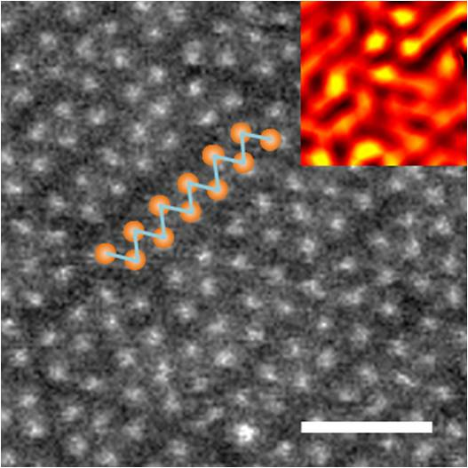

Covalent functionalization of monolayered transition metal dichalcogenides
Controling the surface chemistry of 2D materials is an intense field of research in order to modify the optoelectronic properties or to improve the solubility. The basal plane of transition metal dichalcogenides is usually believed to be chemically inert. Through this project we are aiming to modify in a controllable way the surface of single-layer TMDs without using defects in the materials. Our results have demonstrated that covalent functionalization of TMDs can be achieved via phase engineering using the 1T phase of group-6 TMDs (MoS2, WS2 and MoSe2). The site of attachment is located on the chalcogen atoms. Functionalization induces dramatic changes of the optoelectronic responses of the 1T TMDs, which can open new directions for tuning the properties of TMDs nanosheets.
Voiry et al. Nature Chemistry (2014)
Low resistance contacts to MoS2 field effect transistor
Our expertise in phase engineering of TMDs has enabled us to design and test high performance MoS2 field effect
transistors with metallic 1T phase contacts. Experimental device characteristics of MoS2 transistors have not yet
reached the theoretical predictions, one main reason for that been the difficulty to make proper metal contacts to
MoS2. In order to overcome this issue, we developed our own strategy of using metallic phase 1T
MoS2 at the contacts and using semiconducting phase 2H MoS2 as the channel layer of the field effect transistor Metal deposited on 1T MoS2 has a much lowered Schottky barrier resulting in efficient injection of charge carriers into the semiconductor. This tremendous improvement in the performance of MoS2 devices has encouraged us to use this technique for other TMDs, hence making this strategy universal.
Kappera et al. Nature Materials (2014)
Chemically exfoliated Transition Metal Dichalcogenides for the
Hydrogen Evolution Reaction (HER)
Hydrogen is commonly described as the cleanest fuel ever.
However the energy transition towards hydrogen will happen only when hydrogen will be produced at equivalent or lower cost than the other sources of energy. Transition Metal Dichalcogenides (TMDs) are affordable electrocatalyst materials for evolving hydrogen at exceptionally low overpotentials. Moreover recent contributions from our group have revealed the presence of two different phases in chemically exfoliated
MoS2. We are currently investigating the influence of the exfoliation as well as the properties of the different phases towards hydrogen evolution from various TMDs including WS2 and MoS2. This will give new perspectives for designing improved TMD-based catalyst.
Voiry et al. Nature Materials (2013)
Voiry et al. Nano Lett. (2013)
Layered Transition Metal Dichalcogenide-based thin films optical/optoelectronic/electronic devices
Analogue to graphene, a single sheet of layered transition metal dichalcogenides (LTMDs) exhibit intriguing properties arising from their low dimensionality. Atomically-thin layers of LTMDs can be produced in large quantities in a form of solution via appropriate chemical exfoliation process. We have solution-processed single layer LTMDs to fabricate a novel class of ultra-thin films which could be useful for wide range of devices such as photovoltaics, light emitting diodes, and thin film transistors. Our aim is to explore novel applications of chemically exfoliated LTMDs.
Eda et al. Nano Lett. (2011)
Graphene-based thin film electronic devices
A single sheet of graphite, or graphene, possesses extremely interesting properties arising from its unique energy dispersion. Graphene can be produced in large quantities and processed in a form of solution once appropriate chemical functionalization is applied. We have solution-processed graphene to fabricate a large area ultra-thin films which could be useful for macro-scale electronic devices such as photovoltaics, sensors, and thin film transistors. One of the major challenges of this work is the complete removal of functional groups from the starting graphene oxide solution (which are initially required for processability) to fully recover the intrinsic properties of graphene. Our aim is to optimize the opto-electronic properties of solution-processed graphene and incorporate it into large area thin film electronics.
Eda et al. Advanced Materials (2011)
Single walled carbon nanotubes-based thin film electronic devices
As-synthesized single walled carbon nanotubes (SWNTs) are heterogeneous containg metallic or semiconducting SWNTs. Due to averaging effect, when a random network (or thin films) of SWNTs is prepared, the material can behave as either metallic or semiconducting depending on the network density. SWNT thin films make great transparent conductors when metallic nature of SWNTs is exploited. On the other hand, high performance thin film transistors (TFTs) can be also fabricated from SWNT thin films in which semiconducting nature of SWNTs is utilized. We are currently investigating how the properties of SWNT thin films can be "tuned" for large area opto-electronic applications.
Parekh et al. Applied Physics Letters (2007)
Single walled carbon nanotube scaffolds for bone cell growth
The long term objective of this in-vitro study is to understand how carbon nanotube substrates affect and control osteoblastic cell behavior. In our wet chemistry laboratory, we prepare single walled carbon nanotube (SWNT) thin films that form a scaffold for cell growth. The matrix morphology (roughness and pore size) is easily controllable and thin films can be deposited on a wide range of materials to form a bio-inert coating. This layer can be also functionalized with desired proteins, ligands or calcium related (hydroxyapatite, a-tricalcium phosphate) formulations. Further evaluations of the engineered matrices take place in collaboration with nearby University of Medicine and Dentistry of New Jersey (UMDNJ) in the bio-physics laboratory of Prof. Federico Sesti. A variety of biochemical, fluorescent microscopy and optical techniques
are commonly applied to record cellular behavior.
We are particularly interested in how the surface morphology of SWNT scaffolds impacts cell proliferation, differentiation, and calcification. Recent survey of the existing knowledge on the osteoblast cells response to carbon nanotubes reveals inconsistency. That is, reported biological studies describe nanotubes either as being toxic (Zhang et al. Nanotechnology 18 475102 (2007)) or enhancing cellular growth (Meng et al. J Biomed Mater Res Part A 79A 298 (2006)). By systematically studying osteoblastic cell development, we aim to reveal intrinsic interactions influencing tissue histogenesis.
Boron carbide nanowires
Boron carbide nanowires are important for their potential use in high performance armor and thermoelectric devices. We are exploring the role of boron/carbon ratio, temperature, inert gas pressure and dopants (Si) on the morphology, length and diameter of nanowires grown using a simple solid-liquid-solid (SLS) growth method. In addition, we are venturing into the growth parameters necessary for the Si doping of boron carbide nanowires which results in exotic structures ranging from nanowires and nanobelts to nano-cacti. The effect of doping on the conductivity is further evaluated and compared t pure boron carbide. The doped-B4C nanowires are expected to have improved physical properties with the Hugoniot elastic limit (HEL) predicted to be above 40 GPa based on our calculations, the highest value ever found in solids.
Boron carbide thin films
Our research aims at understanding properties and capabilities of boron carbide-based materials for many potential applications such as hard coatings and ballistic impact shields. Although boron carbide possesses the highest dynamic elasticity among ceramic materials, it shows an anomalous glass-like behavior at high velocity impacts. The focus of our attention is to understand and adjust the mechanical response of boron carbide by investigating the chemistry, microstructure and morphology of boron carbide-based thin film.
Radio frequency magnetron sputtering is used for the deposition of boron carbide-based films. Electron microscopy, Raman spectroscopy, X-ray diffraction and nano-indentation are performed for a full chemical, structural and mechanical characterization of the films.